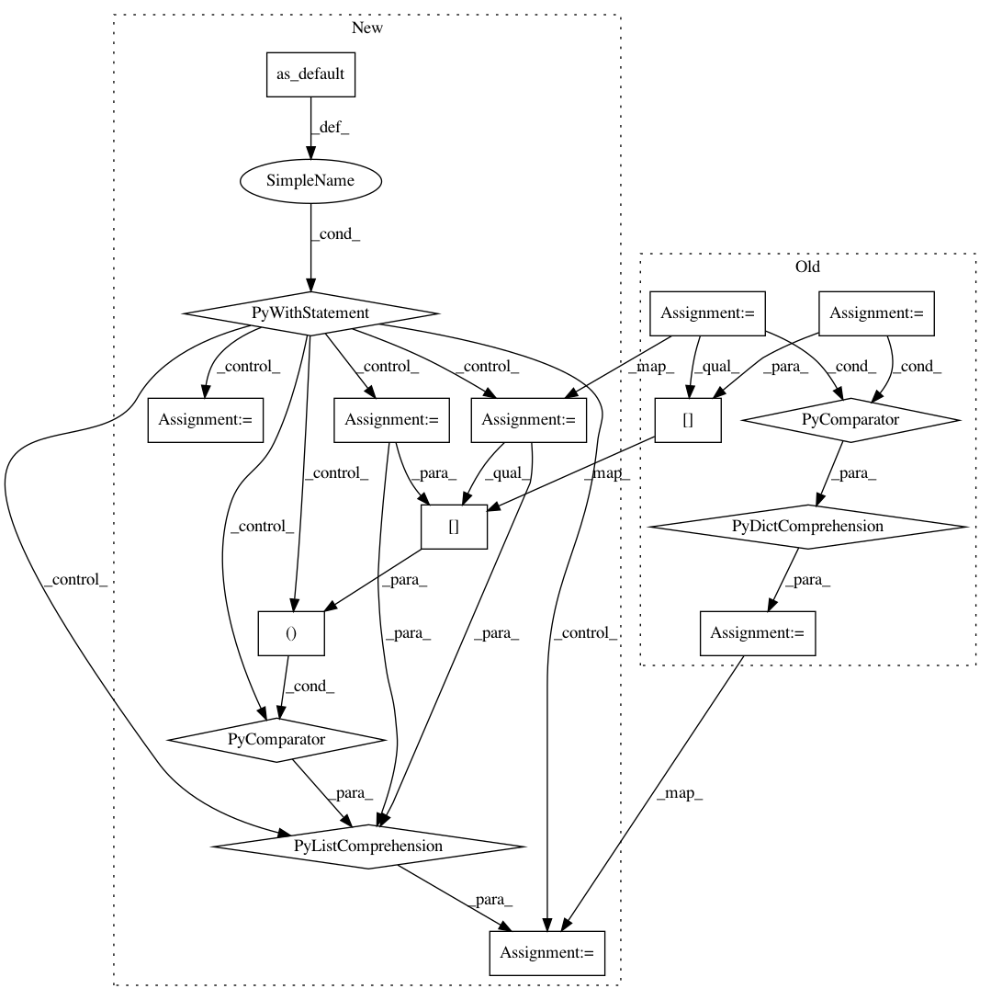

38e9391dcb5e8991a1a663601ce78bf7f08df474,tensorflow_transform/graph_tools_test.py,GraphToolsTest,testDetermineReadyTensorsAndTableInitializers,#GraphToolsTest#Any#Any#Any#Any#Any#,403
Before Change
num_ready_table_initializers: The number of table initializers that are
ready to run in the table initialization run of this phase.
tensors = create_graph_fn()
replaced_tensors_ready = {tensors[name]: ready
for name, ready in replaced_tensors_ready.items()}
graph_analyzer = graph_tools.InitializableGraphAnalyzer(
tf.compat.v1.get_default_graph(), {x: tensors[x] for x in feeds},
replaced_tensors_ready)
After Change
num_ready_table_initializers: The number of table initializers that are
ready to run in the table initialization run of this phase.
with tf.compat.v1.Graph().as_default() as graph:
tensors = create_graph_fn()
replaced_tensors_ready = [(tensors[name], ready) for name, ready
in replaced_tensors_ready.items()]
graph_analyzer = graph_tools.InitializableGraphAnalyzer(
graph, {x: tensors[x] for x in feeds},
replaced_tensors_ready)
self.assertEqual(len(graph_analyzer.ready_table_initializers),
num_ready_table_initializers)
for name, ready in should_be_ready.items():
tensor = tensors[name]
self.assertEqual(graph_analyzer.ready_to_run(tensor), ready)
In pattern: SUPERPATTERN
Frequency: 3
Non-data size: 16
Instances
Project Name: tensorflow/transform
Commit Name: 38e9391dcb5e8991a1a663601ce78bf7f08df474
Time: 2019-10-10
Author: tf-transform-dev@google.com
File Name: tensorflow_transform/graph_tools_test.py
Class Name: GraphToolsTest
Method Name: testDetermineReadyTensorsAndTableInitializers
Project Name: tensorflow/transform
Commit Name: 38e9391dcb5e8991a1a663601ce78bf7f08df474
Time: 2019-10-10
Author: tf-transform-dev@google.com
File Name: tensorflow_transform/graph_tools_test.py
Class Name: GraphToolsTest
Method Name: testInitializableGraphAnalyzerConstructorRaises
Project Name: tensorflow/transform
Commit Name: 38e9391dcb5e8991a1a663601ce78bf7f08df474
Time: 2019-10-10
Author: tf-transform-dev@google.com
File Name: tensorflow_transform/graph_tools_test.py
Class Name: GraphToolsTestUniquePath
Method Name: testGetUniquePath